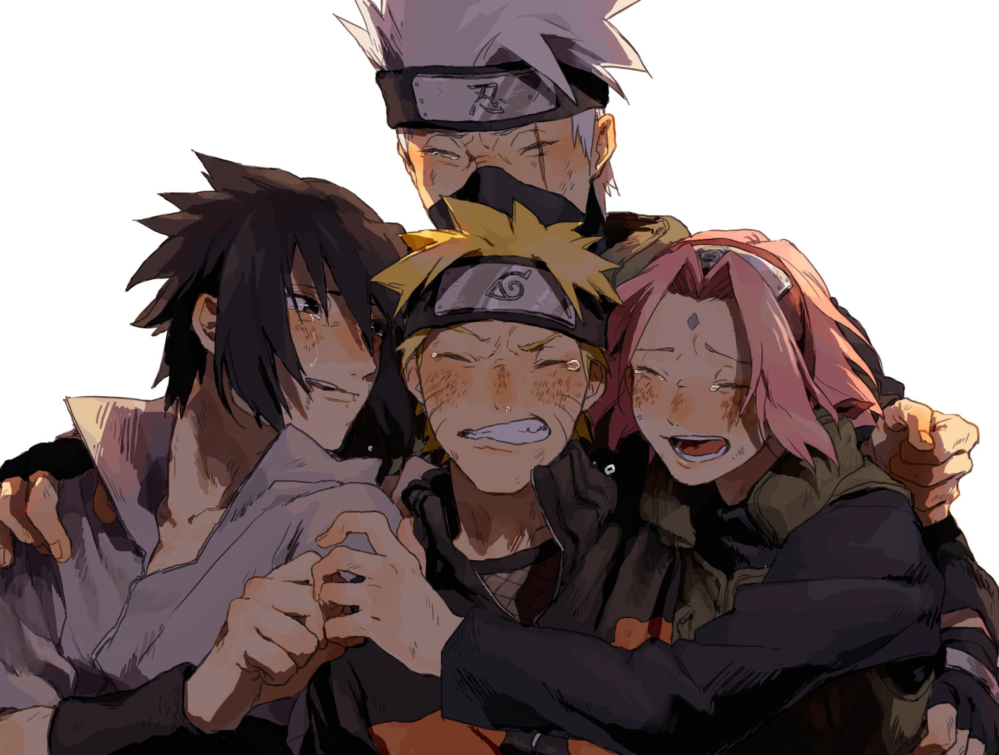

This is during the 4th war...
Naruto has a kyuubi without susanoo and does not have rinnegan or sasuke's sharigan or byakugan but he has uzumaki chakra and nine tails chakra controlled mode and is the descendant of the sage of six paths....
How I think Naruto could be improved
- Madara needs to be less powerful
- Naruto needs to use other moves besides
rasengan
- Pain's animation should be MUCH better
- Sakura should have more moves
- Hinata is pretty useless
click here to learn
more